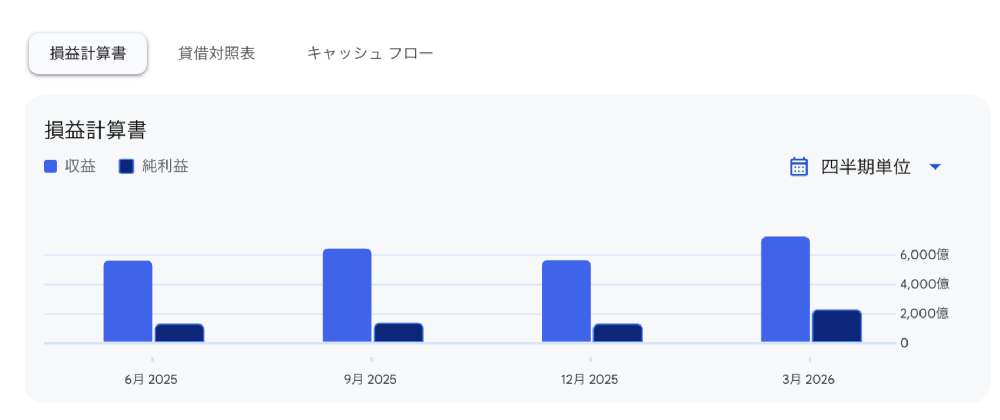
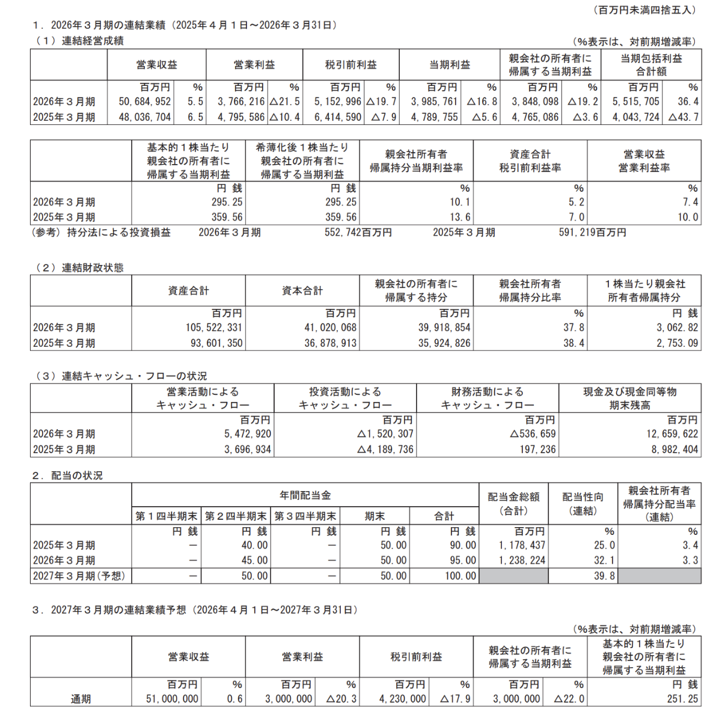
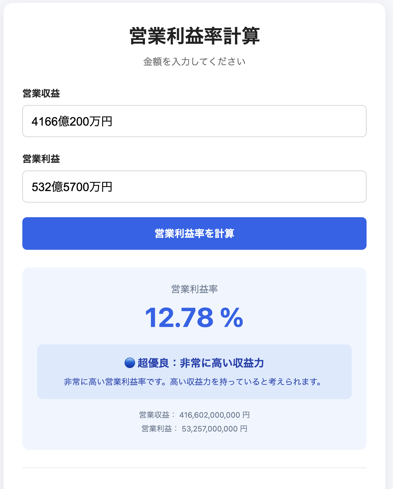
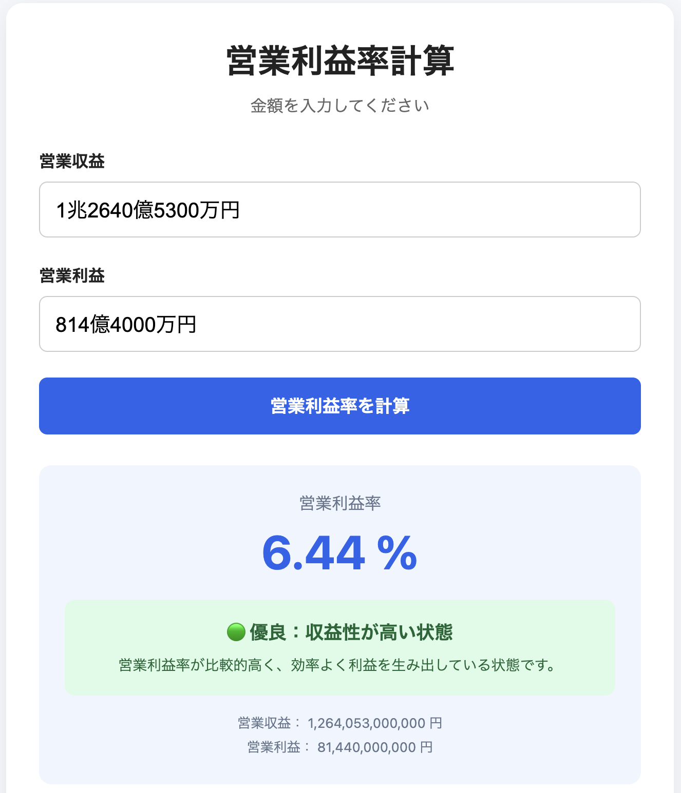
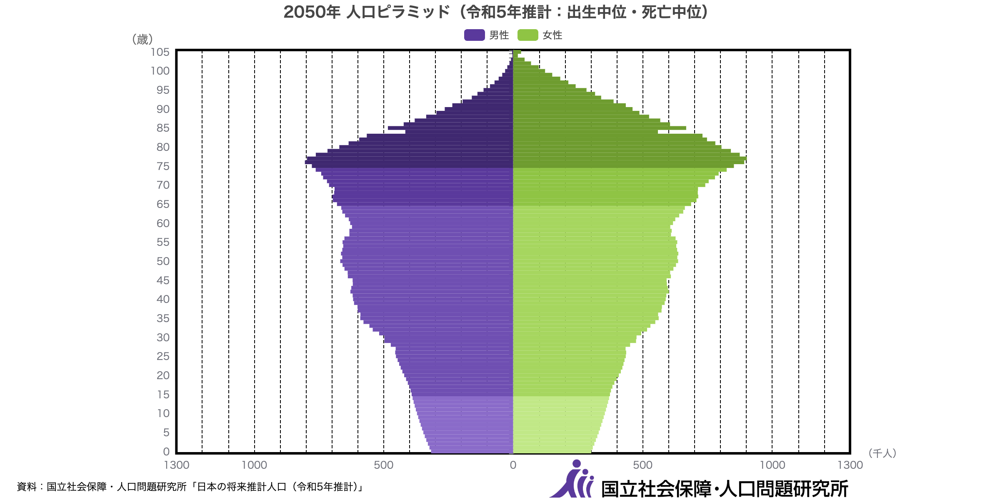

図：東京エレクトロン（出典：Google Finance） Google Financeでは、このように収益と純利益をグラフで見ることができる。けれども、Google Finance以外でこんなに見やすい図を見たことがない。初心者でも会社の成長が分かりやすいので、自分は便利だと思っている。でも、このグラフはGoogle Financeが見やすくまとめたものだ。では、企業が実際に公表している資料はどんなものだろう？と思っただろう。企業が正式に公開している資料では、数字が表で細かく並んでいることがほとんどだ。その代表的な資料が決算短信。決算短信をよく見る。 決算短信とは、会社がどれくらい稼いだのか、どれくらい資産や負債があるのかなどをまとめた資料である。決算の内容をまとめたものだ。 損益計算書の実用
図：２０２６年トヨタ自動車決算短信 決算資料を見てると、百万円と言う謎の単位をよく見かける。けれども、決算資料を色々読んでいくとこの単位を勝手に脳内変換できるようになる。この単位は右の行から２番目、例えば１０なら１０００万円。３番目なら一億円と覚えよう。例えば、上の営業収益と書いてあるところは、５０兆円だ。この部分で見ると左から２番目のカンマで、左が兆の位、右が、億の位と見ることができる。ただこれは、トヨタ自動車のように、決算の単位が兆円出ないと使えないかもしれない。 本題の読み方に戻るが、営業収益（売上高） 営業収益（売上高）とは、本業によってどれだけのお金を稼いだのかを表す数字だ。 会社の利益を見るとき、まず最初に見るべき出発点になる部分である。 投資家はここを見ることで、「その会社の商品やサービスがどれだけ世の中に必要とされているか」を判断する。 営業収益が毎年伸びている会社は、売上が拡大している、つまり市場からの需要が増えている可能性が高い。 すべての利益は、まずこの営業収益から始まる。 ──────────────────────── 粗利益（売上総利益） 粗利益とは、営業収益から商品の仕入れや製造にかかった費用（売上原価）を引いた利益だ。 ここを見ることで、「その商品やサービス自体に、どれだけ稼ぐ力があるのか」が分かる。 例えば、同じ商品を売っていても、高い価格で販売できる会社は粗利益率が高くなる。 粗利益率が高い会社は、強いブランド力や他社には真似できない技術を持っていることが多い。 つまり、競争力の強さを見るための重要な指標になる。 営業利益 営業利益とは、粗利益から広告費、人件費、家賃など、本業を続けるために必要な費用（販管費）を引いた利益だ。 ここは投資家が特に注目する部分である。 なぜなら、「その会社が本業だけで、どれだけ効率よく利益を出せているか」が分かるからだ。 売上が大きくても、費用がかかりすぎて営業利益が少ない会社では、本当に稼ぐ力があるとは言いにくい。 営業利益が継続して伸びている会社は、本業の力が強い会社と評価されやすい。 経常利益 経常利益とは、営業利益に本業以外の日常的な収入や費用を加減した利益だ。 例えば、受取利息や配当金などの収入、借入金に対する利息などが含まれる。 ここを見ることで、本業だけではなく、会社全体の普段の経営力を見ることができる。 本業が好調でも、借金が多く利息の負担が大きい会社では、最終的な利益が減ってしまう。 そのため、財務面も含めた安定性を確認するための指標になる。 税引前利益（税引前当期純利益） 税引前利益とは、経常利益に特別な利益や損失を加減した、税金を支払う前の利益だ。 土地や株式の売却益、災害による損失、事業整理にかかった費用など、毎年発生するとは限らない出来事もここに含まれる。 そのため、その年に会社で起きた出来事をすべて反映した結果を見ることができる。 また、税金を引く前の数字なので、国による税率の違いを受けにくく、他社との収益力を比較するときにも使いやすい。 純利益（当期純利益） 純利益とは、税引前利益から法人税などを支払ったあと、最終的に会社に残る利益だ。 わかりやすくいうと原価や人件費などの出費を全部引いた、会社が自由に使えるお金だ。 これは株主にとって最も重要な利益になる。 なぜなら、この利益をもとに配当金が支払われたり、会社の成長のための設備投資や新しい事業への投資が行われたりするからだ。 また、純利益が継続して増えている会社は、企業価値が高まりやすく、長期的な株価上昇につながる可能性がある。 決算を見るときは、売上だけを見るのではなく、最終的にどれだけ利益を残せているのかまで確認することが大切だ。 この利益を見ると、この企業は儲けているか、それともどんどん利益が減って行っているのかを区別することができる。これを損益計算書(P/L)という。 そして、貸借対照表(B/S)というものもある。ただしこちらは基準が複雑なためあまり説明できない。なので、貸借対照表というものがあると覚えておけばいい。だが、簡単にいうとその会社に負債(借金、後払い金など)と、資産(現金や預金、商品など1年以内に現金化できるものや建物、土地、機械、ソフトウェアなど長期にわたり保有・使用するもの)を表にしたものである。 この表にするのが貸借対照表と覚えられる。表には左に資産、右に負債、下に純資産と表示する。
営業利益率が12.78%であることがわかる。では、日本マクドナルドの一番の競合している企業といったら外食のすき家やサイゼリヤだろう。すき家の親会社であるゼンショーホールディングスの営業利益率を計算すると、
営業利益率が同じ外食産業でも、6.44%と表示されている。そもそもの元の母体である、営業収益ではこのようなどれぐらいの割合で稼げているかを測ることはできない。 日本マクドナルドの営業収益の約4000億円に対して、ゼンショーホールディングスは約1兆2000億円であり、４倍の差がある。なので、売り上げが多くても、 利益率の出方が違うと、例えば個人商店でA店とB店が同じ1000万円の売上高として、A店の利益率が10%で、B店が15%だった場合、A店の方がB店より50万円も多く利益を出していて、 わかりやすくいうと、B店は原価や経費などを抑えて効率よく稼いでいることがわかる。なのでこの比較の場合、日本マクドナルドはゼンショーホールディングスより、 売り上げが4分の1なのに、利益の効率がゼンショーホールディングスの２倍なのである。つまり、売り上げと利益の効率は比例しないものなのである。 結論として、利益率を気にすることも一種の基準だ。ただし、利益率が悪くても稼げている企業ももちろんある。だが、利益率が低い企業はまぁまぁある。なので利益率も選ぶ基準だということを覚えておこう。 ちなみに目安の利益率は業界によって違うので、わからない場合は調べたり、その業界の他の企業と比べてみると良い。 このように、営業利益率は一概に正しい基準とはいえないが、企業の稼ぐ力をわかりやすく見ることができる。
出典:人口ピラミッド-国立社会保障・人口問題研究所 予想だと2050年は年金を受け取る高齢者が多くなっており、一人の高齢者を1.3人が支え、逆に言うと一人の若者が0.75人を支えなければいけないのだ。まぁ多分この頃にはこの制度がなくなって いそうだが、明らかに高齢者を支えるためにある年金の負担が大きすぎる。だが、この制度をなくすと今年金を払って苦しんでいる層が、見返りをもらえないため、反対意見がある。でも未来の 働いてる人に負担をかけてしまうのでは？と自分は思う。だが、複雑な話なのでこの話では放置しよう。 銀行口座でも比べてみよう。1990年の預金金利は6.0%であり、100万円を預けると、60800円(税引前)が1年で入ってきてたが、今は0.35%さらにネット銀行のキャンペーン等を組み合わせたり工夫したら、1.6%で、 利益は3500〜16700円(税引前)と、金利も低くなっているので、昭和の方々の思考とはまるで別物の世界になっているのだ。最近日銀が利上げを進めてきたので、 長年の0.001%から上がってきたが、昔の常識とは違う世界になっているのは現実だ。だから、老後に年金だけでは暮らせなくなる可能性があるのだ。なので、資産形成は必要だと思う。